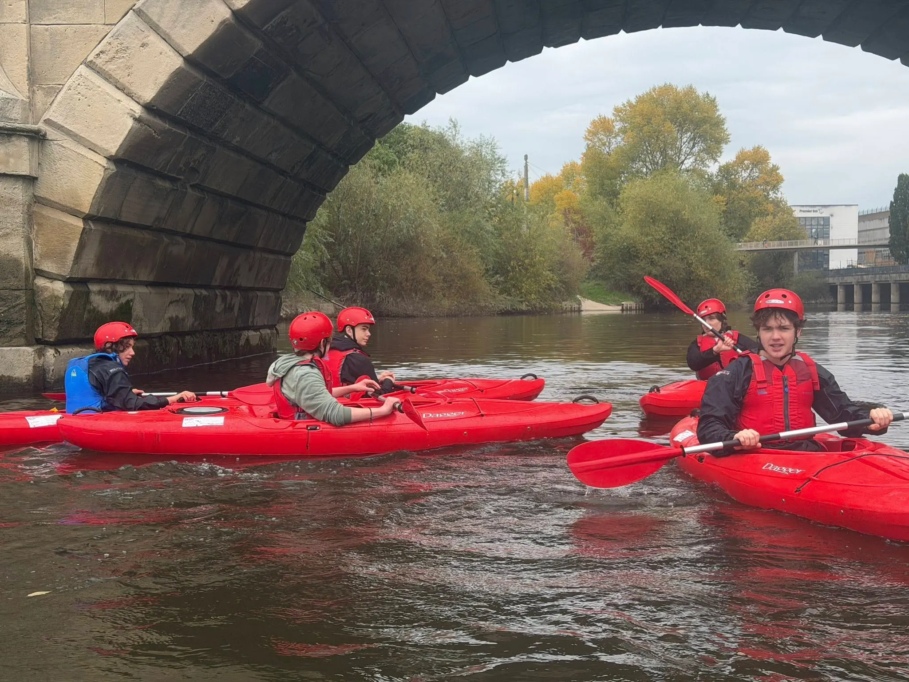
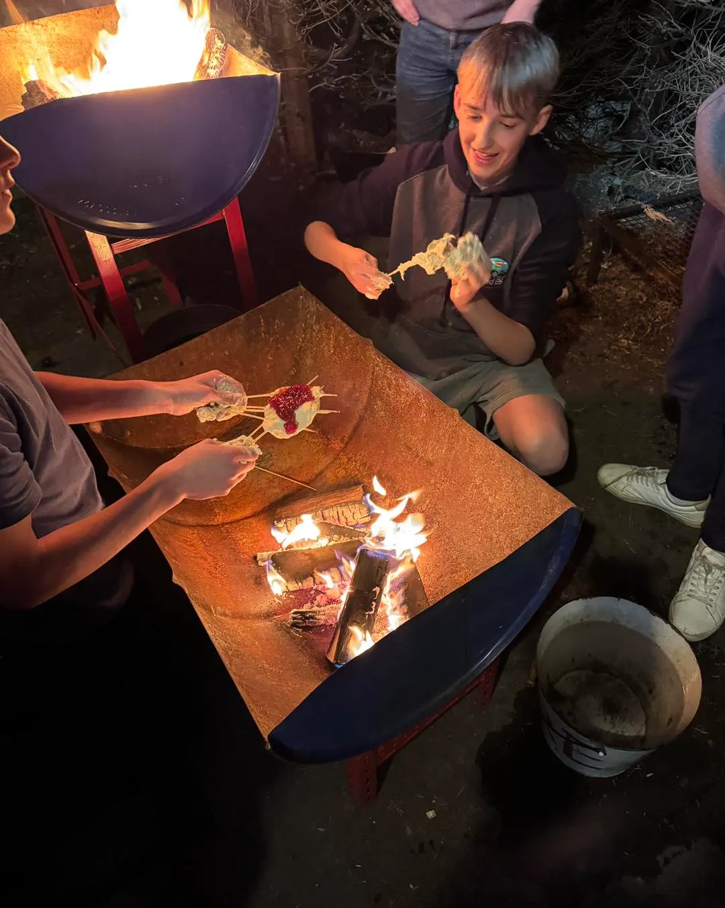
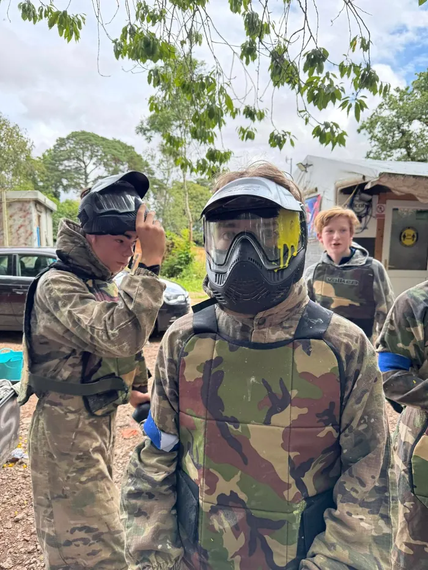

Kayaking
On the river with a qualified instructor. You'll get wet. That's the point.

If you're 13½+ and Scouts is starting to feel a bit small for you, here's the honest pitch. You don't have to drop Scouts. Explorers is free during your transition from Scouts. And you decide what we actually do.
Your Scout night is Friday. We're Monday. Same hut. Zero clash. Plenty of our members did both for ages before deciding. Nobody's asking you to walk away from your mates or the badges you've earned.
Stay in Scouts on Friday and come to Explorers on Monday and you pay nothing for Explorers during your transition from Scouts. No subs, no forms, no pressure. We only start charging once you decide to leave Scouts and become Explorers-only.
Every term we ask the Explorers what they want and we build the programme around it. Want to go go-karting? We'll sort it. Want a gaming night, a survival weekend, a curry night, a climbing trip? Tell us. It's literally your programme.
We're up for stuff. The hut is still standing. We're not a quiet group sat in a circle. If you're someone who wants a bit more energy and a bit more freedom, you'll fit in fine.
Easiest way to test the rumours? Come once. You'll know in twenty minutes.
Have a look at the live programme to see exactly what's on this term. Some recent and upcoming flavour:

On the river with a qualified instructor. You'll get wet. That's the point.

Real rock, not a leisure-centre wall. Helmets on, chalk up, send it.

Real camping, cook your own food, sleep under the stars (or a tarp, it's Shropshire).

Paintballing, go-karting, the Monopoly Run in London. We pile in the bigger stuff alongside Mondays.
Outdoor games in the woods after dark, gaming on the projector at the hut, cooking challenges, daft stuff that ends up being the best bits.
 DofE £33.50
DofE £33.50
First aid, navigation, leadership. Stuff that's useful in real life and looks good on a CV.
At the start of every term we ask everyone what they want to do: activities, trips, challenges, daft ideas, all of it. If we can sort it, we sort it. If it needs an instructor or a venue or some planning, we'll make it happen.
If there's something you want to try and we've not done it yet, that's a feature not a bug.
Drop us an email and we'll sort you a Monday. That way we know to expect you, and we can tell you whether we're at the hut that night or somewhere else, and what to wear. Then it's 7pm, normal clothes, and you see what you think.
Got a mate who isn't in Scouts and might be into this? Send them here →